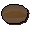

Soft clay
| Config name | softclay |
| Item id | 1761 |
| Value | 2 gp |
| Weight | 2lb |
| Members | No |
| Tradeable | Yes |
| Stackable | No |
| Defined in | scripts/skill_crafting/configs/pottery/pottery.obj |
Soft clay
Clay soft enough to mould.
How to make
| Skill | Level | XP | Ingredients | Tool | How | Where | Makes |
|---|---|---|---|---|---|---|---|
| Crafting | 1 | use on item | 1 water: any of bowl_water, bucket_water, jug_water |
Used to make
| Skill | Level | XP | Ingredients | Tool | How | Where | Makes |
|---|---|---|---|---|---|---|---|
| Crafting | 1 | 6.3 | chat menu Pot / Pie Dish / Bowl | pottery | |||
| Crafting | 7 | 10.0 | chat menu Pot / Pie Dish / Bowl | pottery |  Pie dish | ||
| Crafting | 8 | 15.0 | chat menu Pot / Pie Dish / Bowl | pottery |
Referenced in scripts
scripts/areas/area_draynor/scripts/lady_keli.rs2scripts/skill_crafting/scripts/pottery/pottery.rs2